Swarm Inc.
Video
About
Two robot nerds, one big idea: make small robots think together. In this Patch Demo Day pitch, we show how we went from simulations to a DIY robot swarm in just seven weeks - then run a live 200+ audience powered demo.
During PATCH, Shane and I became interested in swarm robotics: the idea that many simple robots can work together to create behaviour that looks intelligent at the group level. We started by looking at natural swarms like birds, ants, and fish, but the part that really caught our attention was the engineering question underneath it: how do you get independent robots to move, coordinate, and complete tasks together without constantly colliding?
Starting with simulations
Before building the robots, we first created a set of virtual swarm simulations. This gave us a way to test ideas quickly before dealing with hardware. We experimented with robots forming letters and shapes, pushing an object towards a target, and mimicking flocking behaviour. These simulations eventually became a live website, swarminc.com, where we could show the algorithms visually and make the idea easier to understand.
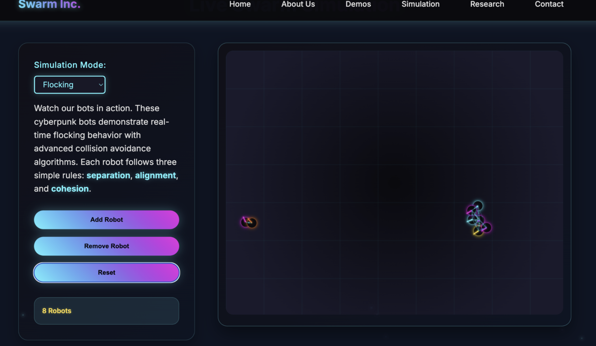
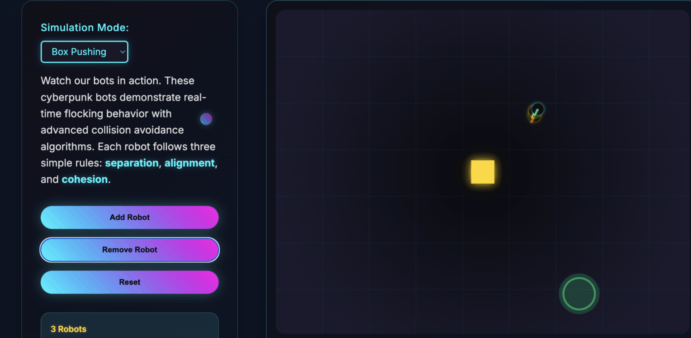
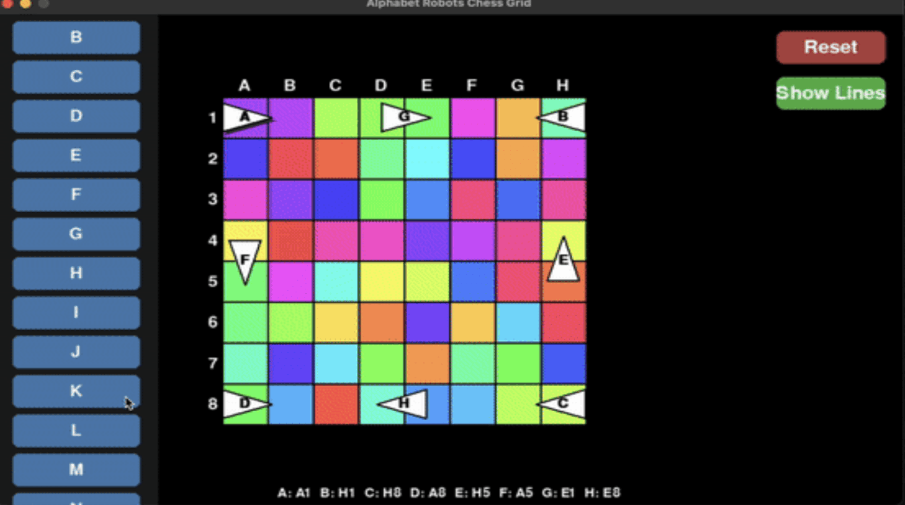
Building the robots
Once the simulations worked, we wanted to see what swarm behaviour would look like in the real world. Buying ready-made compact swarm robots was far too expensive, so we decided to build our own. Each robot used an acrylic chassis, two powered wheels, caster wheels for balance, an ESP32-S3 microcontroller, an L298N motor driver, and separate power sources for the logic and motors.
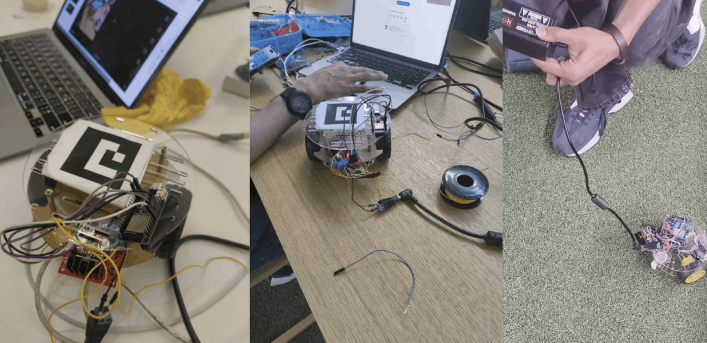
The Eurogiant battery saga
This was when the real chaos started: batteries. The microcontroller needed stable power, the motors needed enough current, and the robots needed to run long enough for testing without dying every few minutes. We tested cheap battery packs and mixed setups until we settled on a practical split-power system, with one supply for the electronics and another for the motors.
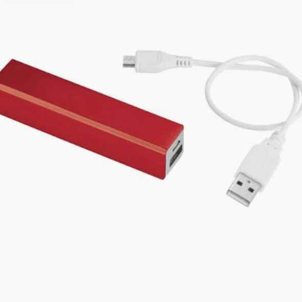
Motor control
For movement, the ESP32-S3 acted as the brain of each robot. It received commands over Wi-Fi, controlled the motor driver using GPIO and PWM signals, and handled basic onboard logic. The L298N motor driver controlled direction and speed using an H-bridge design, so each robot could move forward, reverse, turn, or stop.
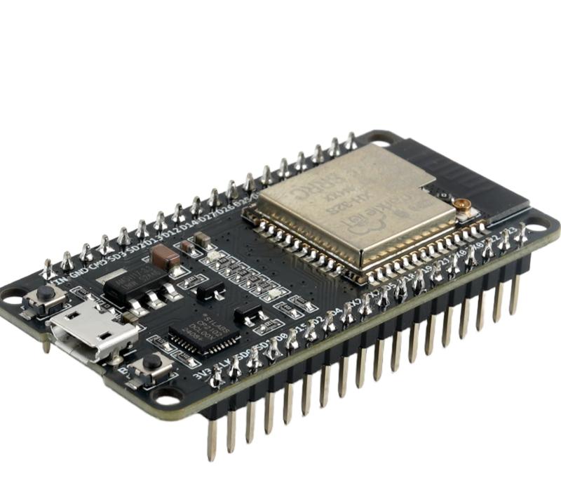
Overhead camera tracking
The next problem was localisation. Instead of adding expensive sensors to every robot, we built an overhead camera system. Each robot had an ArUco marker placed on top of it, and OpenCV detected each marker in real time. We mapped the floor into a 6x6 grid, almost like a chessboard, so each robot could be assigned a position such as A3 or D5.
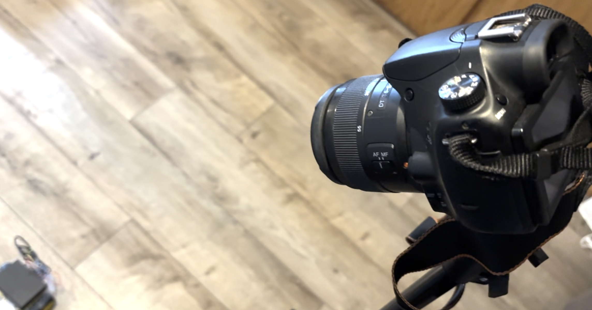
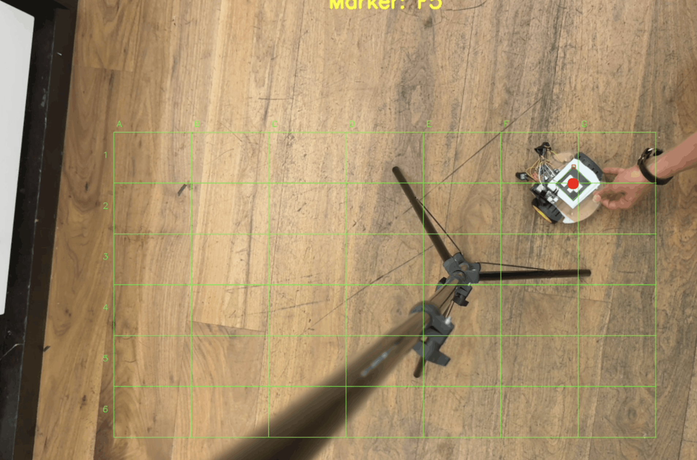
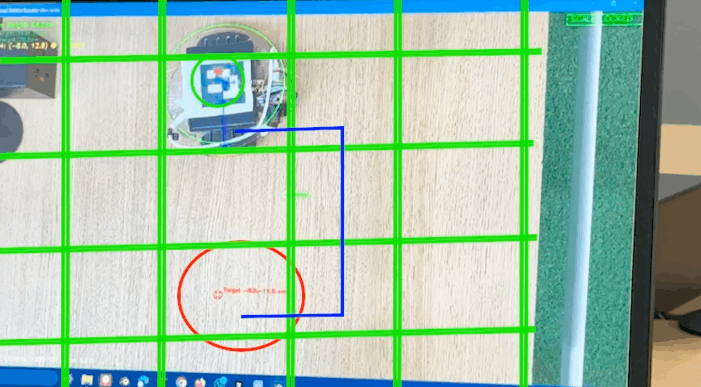
Building SwarmNet
Communication was another major challenge. Public Wi-Fi and personal hotspots were not reliable enough in the PATCH workspace, so we built our own local network called SwarmNet using an Arduino UNO R4 WiFi as a dedicated access point. Each robot ran a small web server with its own IP address and port, letting our Python control program send commands to specific robots.
Physical demos
Our physical demos included voice-controlling the robots' motion with audience voice commands, creating a mini GPS to control robots using overhead cameras, and even giving robots a "bumpy ride".
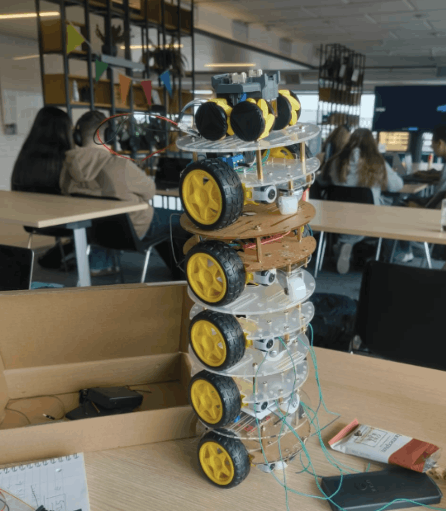
What we built
By the end of the summer, the project had grown into a full swarm robotics system: virtual simulations, a live website, custom-built low-cost robots, an overhead tracking system, a local communication network, and working physical demos. It was not just about making robots move together; it was about building the full stack needed for swarm behaviour.
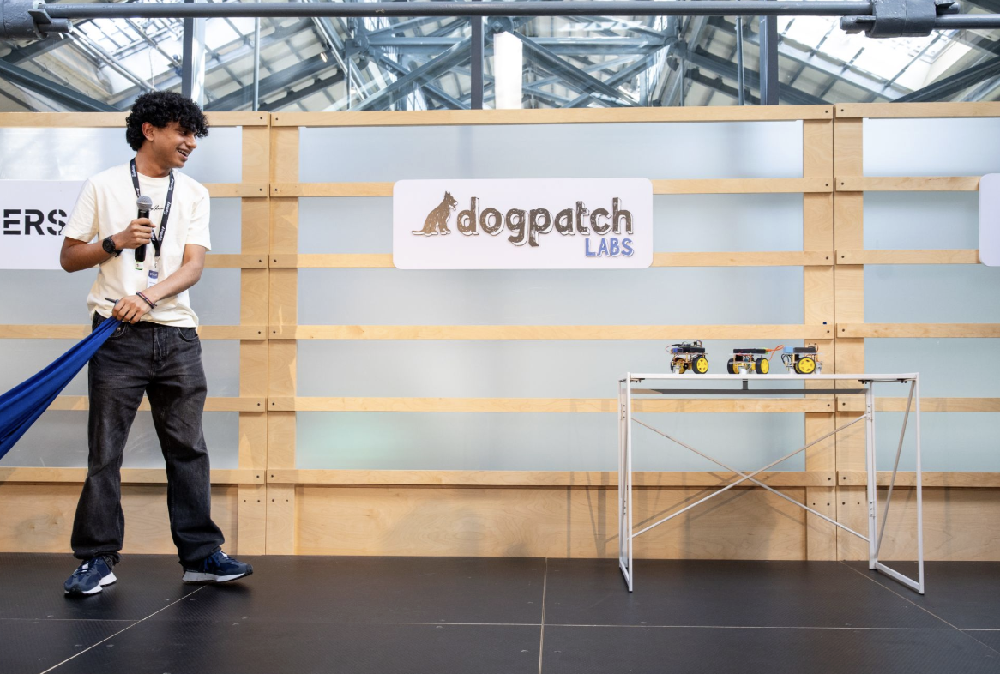
Recognition
- Selected for an elite 7-week onsite youth accelerator program, supported by Stripe, OpenAI, Abbey Capital, and Dogpatch Labs.
- Mentored by founders of unicorn startups, as well as leading researchers, engineers, and entrepreneurs across industry and academia.
- Youngest participant in the cohort (age 16), and presented the project at Demo Day to an audience of 300+ builders, founders, researchers, and industry professionals.